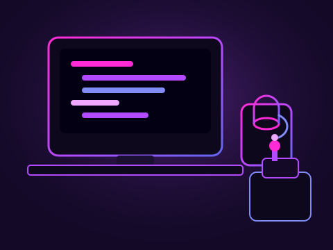

Steg 1
Mobilutveckling
Två års studier där jag byggde appar för både iOS och Android och lärde mig att tänka i användarflöden.
Jag har alltid varit nyfiken på teknik och hur saker faktiskt fungerar bakom skärmen. Det intresset ledde mig till programmering och senare till två års studier inom mobilapputveckling.
Efter utbildningen ville jag fortsätta utvecklas och bredda mina kunskaper, så idag studerar jag vidare inom backend och webbutveckling. Jag gillar att lära mig nya tekniker, testa egna idéer och framför allt bygga saker på riktigt – allt från webbplatser och webbappar till mobilappar för iOS och Android.
Några av projekten jag har byggt längs vägen hittar du under Projekt.

Steg 1
Två års studier där jag byggde appar för både iOS och Android och lärde mig att tänka i användarflöden.
Steg 2
Nu fördjupar jag mig i backend och webbutveckling för att kunna bygga mer kompletta lösningar.
Steg 3
Vid sidan av studierna bygger jag egna projekt, som de du ser på projektsidan.